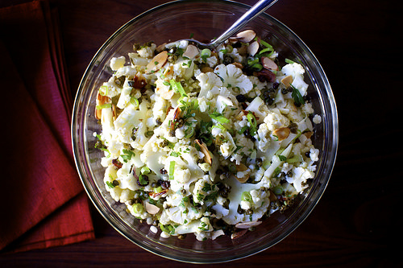
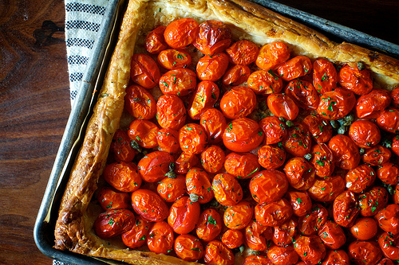
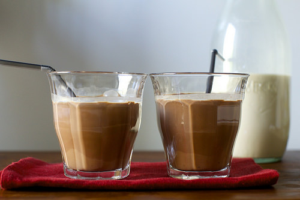
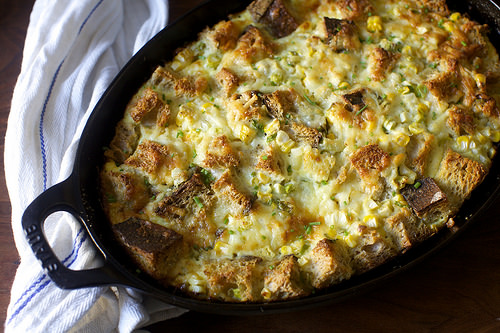

Thursday, September 18, 2014
I began this summer by expressing, in no uncertain terms, just how terrible New York City summers really are — sticky airlessness occasionally broken up by eerily refreshing droplets of cool water on your head that turn out to be filthy window a/c run-off, and you know, given that NYC lets people with absolutely no relevant skills install their own window a/c units, you might not want to walk underneath them at all, is all I’m saying. Right, I’ve digressed again. I think I hoped that if I aired my grievances about summer early and unflinchingly, I could get through the season without my least favorite of my writing tics, whining about the weather.
And I did, just not because of that. Despite dire warnings from the Farmer’s Almanac that we were going to have one of the more “humid and thundery” summers on record, to my delight, we experienced the opposite. Before Labor Day, there wasn’t a single day where temperatures crept above 91 degrees. In 2013, a year when I broke my don’t-complain-about-the-weather rule basically every time I opened my mouth, there were 16. [I promise, I'm getting somewhere with this.] Of course, NYC still has to have the last word and in the first week of September was back to its muggy air/scorched sidewalk ways. And it was in that week that when getting my weekly fix at this new dumpling place my neighborhood was graced with over the summer, I picked up some of their housemade cucumber lemonade and have not been able to talk about anything else since.
Continued after the jump »
See more: Cucumber,
Drinks,
Lemon,
Photo,
Summer
Do more: Link
| Print
| Email
| 48 Comments
Tuesday, September 16, 2014

Given my druthers, a word I’ve been looking for an excuse to type in a sentence for at least eight years, I would never choose a salad with lettuce in it over one that’s mostly shaved or shredded raw vegetables. I mean, lettuce — the dewy, freshly-plucked-from-the-earth stuff that spends a couple months a year gracing local farmer’s markets — can be absolutely delicious, but nine times out of ten, the same word is used to refer to that packaged stuff that doesn’t taste like a whole lot. And can we talk for just a second about that prematurely rotten red leaf that no bag of mesclun is ever without? Clearly I have spent an unnatural amount of time thinking about this. But in a world filled with avocado cup salads, broccoli slaw, butternut squash, carrot salads with harissa, feta and mint or tahini and crisped chickpeas, chopped salads with lime, sunflower seeds and radishes, crushed peas with sesame dressing and fennel with blood oranges* I’ve found little reason to worship solely at the salad altar of baby field greens.
Ever since I made one of my favorite salads to date, the broccoli slaw, I have wanted to make a cauliflower slaw companion for it, and I know this because I have listed it no less than five times on my sprawling To Cook list. I knew that I wanted it to be “mayo-free,” with a “sharp lemony dressing.” I knew that I wanted it to have “tiny dried currants” in it, and that maybe I’d soak/plump them in the dressing for a while so they added more than just sweetness. I knew that, like the broccoli slaw, it should have well-toasted almonds in it, and that I didn’t mind if it had capers in it, especially if they were crispy. But I couldn’t figure out the structure — I was convinced that cauliflower, shaved thinly, would be nothing but a pile of rubble, but not in a charming way. And then a couple months ago a cauliflower salad appeared on the menu of my favorite restaurant, Barbuto in the West Village (which also brought us this kale salad), and to my delight, it turned out to have many elements of the cauliflower slaw I’d been dreaming about — theirs with raisins, hazelnuts and a unholy helping of olive oil — and the cauliflower had been shaved thin on an adjustable-blade slicer and it was perfect. Sure, there was some rubble but there was an equal amount of nicely intact slices and all I wanted to go home and make it the very next second.
Continued after the jump »
See more: Cauliflower,
Fall,
Lunch,
Photo,
Salad,
Side Dish,
Vegan,
Vegetarian
Do more: Link
| Print
| Email
| 100 Comments
Thursday, September 11, 2014

I had a friend in town this week and just when we were at the point in the conversation when we’d usually pick a place to meet for lunch, something terrible happened. Caught up in a moment where I forgot that I am me and not, say, Ina Garten, I suggested he come over and I’d make lunch for us instead. I realized I’d lost my ever-loving mind. Sure, I’d like to be the kind of person who makes “just lunch, nothing fancy!” for friends on a whim but I am not. I don’t really do “whim” cooking, as a website with nearly 918 intricately detailed recipes in its archives might evidence. Plus, I had so many recipes I was overdue to test out — a lemonade, a salad, a tart and I’d been promising my son I’d make chocolate pudding for weeks, not to mention the daily grind of breakfast, lunchbox and dinner — that I felt like I had no time to cook anything extra.
And then, thank goodness, I realized how ridiculous that was. What could be more delicious for lunch than a salad, a tart, lemonade and chocolate pudding that I’d made enough of to ensure the kid wouldn’t be left out? What, you say? It might be a flop? My friend might push his food around his plate, hoping I wouldn’t notice or, worse, eat something he hated so not to hurt my feelings? Guys, I am 38 years old, by any standards (unfortunately, most days) a grown-up, and I decided that it was time, once and for all, to boldly embrace Julia Child’s best cooking rule: never apologize.
I don’t believe in twisting yourself into knots of excuses and explanations over the food you make… Usually one’s cooking is better than one thinks it is. And if the food is vile, then the cook must simply grit her teeth and bear it with a smile — and learn from her mistakes. (My Life in France)
Continued after the jump »
See more: Appetizer,
Lunch,
Photo,
Summer,
Tarts/Quiche,
Tomatoes,
Vegetarian
Do more: Link
| Print
| Email
| 135 Comments
Friday, September 5, 2014

Like most people with at least a passing interest in foods made from recognizable ingredients, I’ve heard a lot about almond milk in the last decade. But my love of all things milk, cream, crème fraîche, sour cream, double-cream, triple-creme, dulce de leche, sweetened condensed milk and milk fudge (you know, just to get started) was such that I had little interest in making it a regular part of my life.
Plus, there was so much that I didn’t understand. First, most recipes call for raw almonds. Have you ever tasted a raw almond before? They taste, to me, terrible, like waxy nothingness. Why stretch this waxy nothingness into a glass of liquid? However, you know that flavor you get when you deeply toast almonds to a nice milky coffee (mm, milky coffee) shade, that incredible flavor which is amazing in pastries as it is on salads and even for a plain snack? Why weren’t we making almond milk out of toasted almonds — was it just the shade? Does beige “milk” unnerve people?
Continued after the jump »
See more: Chocolate,
Photo,
Snack,
Vegan
Do more: Link
| Print
| Email
| 157 Comments
Wednesday, September 3, 2014

I have a lot of feelings about lunch boxes, none of them especially genial. But as this teeny tiny person that I only just recently brought home from the hospital, barely able to utter a “beh” and now able to fill a 2-hour car ride back from a beach house with all the words every uttered (hm, wonder where he gets it) begins kindergarten this week, and will do so with a lunchbox in hand, I’ve realized that the only way to move forward with my grouchy feelings about lunch boxes is to air them here, in this town’s square, and then move on.
And so here goes: I, Deb Perelman, resent lunch boxes. I resent that my friend Valerie can send her children to a French summer camp where they are served hot lunches (just the basics, like blanquette de veau, omelette aux champginons and, oh, a galette du rois) on real plates daily and the best my child can hope for is stuff like this. I resent that we don’t prioritize filling our children’s bellies with nutritional, balanced meals that will fuel them their growing bodies and brains through long school days, and that only parents with the means to (time or financially) can provide wholesome alternatives. I resent that I’m looking down the barrel of a decade or more of this, every single school day. And I resent that, on top of all this, if our summer months of packing lunch boxes for camp were any indication, at least half of the food will come back uneaten because a whole lot of places that ostensibly have children’s best interests in mind feed them cookies or crackers with ingredient lists as long as this blog post and juice in the middle of the morning as a snack, sometimes just an hour before lunchtime.
Continued after the jump »
See more: Breakfast,
Corn,
Eggs,
Lunch,
Photo,
Summer,
Vegetarian
Do more: Link
| Print
| Email
| 353 Comments